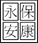

|
行號 |
標籤 |
題目 |
選項1 |
選項2 |
選項3 |
選項4 |
選項5 |
題尾 |
答案 |
解析 |
來源 |
|
1 |
T2D1 010301 3 013001 |
有關全球資訊網(World
Wide Web)服務之敘述，下列何者正確？ |
全球資訊網就是Internet |
瀏覽器(Browser)提供視覺化(GUI)介面程式讀取網頁內容 |
全球資訊網協會(W3C)要求市面上瀏覽器皆須符合它所訂立的網路標準規範 |
瀏覽器之間的程式語法均相容 |
|
|
B |
Internet是網際網路；W3C的標準不具強制性；瀏覽器之間的程式語法不完全相容。 |
|
|
2 |
T2D1 010301 3 013002 |
下列何者不屬於瀏覽器軟體？ |
Edge |
Chrome |
Wix |
Safari |
|
|
C |
|
|
|
3 |
T2D1 010301 3 013003 |
下列何者並非使用者端的網頁檔案格式？ |
.mht |
.htm |
.html |
.xml |
|
|
D |
|
|
|
4 |
T2D2 010301 3 013004 |
小雨習慣利用手機的健康管理App記錄自己的運動及飲食習慣，她原先下載第一種App使用，然而她認為使用介面稍嫌複雜，轉而下載另一種App使用。請問和上述與小雨對App的使用意願，最為相關的網頁設計職務為下列何者？ |
網頁視覺設計師 |
後端網頁工程師 |
UI/UX設計師 |
文字客服 |
|
|
C |
UI/UX為使用者介面／使用者體驗。 |
|
|
5 |
T2D1 010301 3 013005 |
當使用Chrome開啟未安裝SSL數位憑證的網站時，網址列應標示下列何種內容？ |
安全 |
不安全 |
鎖上的鎖頭圖示 |
開啟的鎖頭圖示 |
|
|
B |
|
|
|
6 |
T2D2 010301 3 013006 |
關於具備SSL數位憑證的網站，下列敘述何者錯誤？ |
該網站必為官方網站 |
表示該網站內容經加密傳送 |
駭客若擷取網頁內容，僅能獲得亂碼 |
加密過程使用非對稱加密技術 |
|
|
A |
私人網站也可申請SSL數位憑證。 |
|
|
7 |
T2D1 010302 3 013007 |
下列何者不屬於視覺化的網頁設計軟體？ |
Adobe Dreamweaver |
Adobe XD |
Notepad++ |
Mobirise |
|
|
C |
Notepad++屬於純文字程式碼輸入工具。 |
|
|
8 |
T2D1 010302 3 013008 |
下列何種網頁設計工具，提供雲端儲存服務？ |
Wix.com |
WordPress.com |
Google協作平台 |
Google Web Designer |
|
|
D |
Google Web Designer屬於免費軟體。 |
|
|
9 |
T2D1 010302 3 013009 |
下列何者並非常用於網頁的技術？ |
HTML |
Lisp |
CSS |
JavaScript |
|
|
B |
|
|
|
10 |
T2D2 010302 3 013010 |
下列關於HTML的敘述，何者錯誤？ |
HTML的規範由全球資訊網協會(W3C)維護 |
必須搭配CSS和JavaScript一起使用，否則無法建立網頁 |
目前各大瀏覽器主要遵循HTML5標準 |
HTML5由網頁超文字應用技術工作小組(WHATWG)開發 |
|
|
B |
可單獨成立。 |
|
|
11 |
T2D1 010302 3 013011 |
關於HTML語法，下列敘述何者錯誤？ |
<!doctype html>即宣告HTML文件類型 |
<head>…<head/>用於標示網頁抬頭資訊 |
<body>…<body/>用於標示網頁內容 |
需透過專業軟體才能編輯 |
|
|
D |
透過一般文書處理軟體即可編輯。 |
|
|
12 |
T2D2 010302 3 013012 |
在使用「HTML語言」撰寫網頁時，若撰寫此行「<title>小芳的網站</title>」的語法，則「小芳的網站」將會被顯示在何處？ |
瀏覽視窗 |
瀏覽器的標題列 |
在這份文件內容的最上面 |
狀態列 |
|
|
B |
|
|
|
13 |
T2D1 010302 3 013013 |
在HTML的語法中，標籤<h2>…</h2>可以產生什麼樣的效果？ |
改變視窗標題列的文字 |
套用標題樣式 |
插入表格 |
文字加上底線 |
|
|
B |
|
|
|
14 |
T2D2 010302 3 013014 |
有關HTML檔案的敘述，下列何者正確？ |
HTML是一種多媒體檔，所以能顯示出影像、動畫 |
<title>標籤要放在<body>標籤之中 |
<img>標籤可以插入圖片 |
<hr>標籤可不成對出現，主要功能是文字換行 |
|
|
C |
|
|
|
15 |
T2D1 010302 3 014015 |
在HTML語法中，下列何種是不須成對出現的標籤？ |
<img> |
<body> |
<h1> |
<p> |
|
|
A |
|
|
|
16 |
T2D2 010302 3 014016 |
下列哪一個HTML段落標籤經瀏覽器顯示不會包含「現在我有冰淇淋」字樣？ |
<p>!現在我有冰淇淋</p> |
<p><--現在我有冰淇淋--></p> |
<p><--現在我有冰淇淋!--></p> |
<p><!--現在我有冰淇淋--></p> |
|
|
D |
|
|
|
17 |
T2D1 010302 3 014017 |
在HTML語法中，標籤<br>的作用為下列何者？ |
插入水平線 |
套用標題樣式 |
建立超連結 |
強制換行 |
|
|
D |
|
|
|
18 |
T2D3 010302 3 014018 |
在HTML標籤語法中，下列哪一項包含超連結的功能？ |
<h1 href ="網址">…</h1> |
<a href="網址">…</a><img src="Picture.BMP"> |
<font href="網址">…</font> |
<hyperlink href="網址">…</hyperlink> |
|
|
B |
<img src="圖片路徑/圖片名稱或網址">為影像標籤； |
|
|
19 |
T2D3 010302 3 014019 |
執行下列HTML標籤語法，則網頁輸出的結果為何？ |
 |
|
|
|
|
|
C |
<table>…</table>為表格標籤，border為邊框（border=”0”代表無邊框）；<tr>為列，需與<td>或<th>標籤配合使用；<td>為一般儲存格。 |
|
|
20 |
T2D1 010302 3 014020 |
定義網頁資料顯示、格式化、特殊效果的標準稱之為何？ |
ABS |
CCS |
CIS |
CSS |
|
|
D |
|
|
|
21 |
T2D1 010302 3 014021 |
如果想直接將CSS樣式寫於HTML網頁中，則CSS語法應該被包覆在下列何種標籤內？ |
<style>...</style> |
<img>...</img> |
<body>...</body> |
<a>...</a> |
|
|
A |
|
|
|
22 |
T2D2 010302 3 014022 |
下列有關CSS語法的敘述何者錯誤？ |
由多組規則組成，規則由選擇器(selector)、屬性(property)與值(value)組成 |
屬性(property)與值(value)合稱「特性」 |
所有屬性(property)與值(value)皆須使用「{ }」符號包住表示 |
屬性(property)與值(value)間使用半型逗號「,」間隔，以半型句號「.」結束 |
|
|
D |
|
|
|
23 |
T2D2 010302 3 014023 |
關於CSS樣式中選取器的敘述，下列何者正確？ |
類別選取器用於自定義的新樣式，需在樣式名稱前加半型句號「.」 |
標籤選取器用於自定義的新樣式 |
ID選取器用於HTML已定義的樣式，需在樣式名稱前加半型井字號「#」 |
以上皆是 |
|
|
A |
標籤選取器用於HTML已定義的樣式；ID選取器用於自定義的新樣式。 |
|
|
24 |
T2D3 010302 3 014024 |
關於CSS樣式中，選取器的套用方式，下列敘述何者錯誤？ |
類別選取器可使用<span>標籤套用局部內容，<div>標籤套用區塊內容 |
類別選取器可直接在HTML標籤中，加上「class=”樣式名稱”」套用樣式 |
標籤選取器可直接在HTML標籤中，加上「id=”樣式名稱”」套用樣式 |
ID選取器可直接在HTML標籤中，加上「id=”樣式名稱”」套用樣式 |
|
|
C |
標籤選取器不須特別加入語法。 |
|
|
25 |
T2D1 010302 3 014025 |
關於JavaScript，下列敘述何者錯誤？ |
是一種編譯器式程式語言 |
可使用<script>標籤嵌入HTML，也可撰寫成單獨檔案 |
目前主要瀏覽器皆支援JavaScript語法 |
也可用於遊戲、桌面和行動應用程式的開發和在伺服器端網路環境執行 |
|
|
A |
是一種直譯器式程式語言。 |
|
|
26 |
T2D2 010303 3 015001 |
在網站開發流程中，下列何者不屬於規劃期的階段任務？ |
設定網站主題與風格 |
網站相關資料蒐集整理 |
建立網站架構圖 |
網頁內容製作、測試 |
|
|
D |
網頁內容製作、測試屬於施工期。 |
|
|
27 |
T2D2 010303 3 015002 |
建立網站架構圖屬於網站開發規劃的重要一環。關於網站架構圖的敘述，下列何者錯誤？ |
網站架構圖是整個網站製作的藍圖，可從中了解網站各單元的規劃和連結性 |
製作網站架構圖時，需標示出網站結構與各頁面的層級 |
網站架構圖不限形式，可以組織圖、心智圖或表格方式繪製 |
網站架構圖不需規劃太仔細，避免後續需再更改 |
|
|
D |
在繪製網站架構圖時，規劃得越仔細，越能有效減少後續製作時，因更動網站架構而重新設計或調整修正的時間。 |
|
|
28 |
T2D3 010303 3 015003 |
以下為網頁開發流程中，施工期的階段任務： |
(5)(3)(2)(1)(6)(4) |
(1)(3)(5)(2)(6)(4) |
(2)(3)(5)(1)(6)(4) |
(1)(2)(3)(5)(6)(4) |
|
|
A |
施工期階段性任務可大致分為兩階段，(2)(4)(5)屬於製作階段，(1)(3)(6)屬於上傳推廣階段。網站需先製作完成後，才可依據網站大小，規劃上傳和推廣方式；而在製作階段中，需先完成版面、程式功能設計，才能進行內容製作、測試，並再進行搜尋引擎最佳化的設定。 |
|
|
29 |
T2D2 010303 3 015004 |
下列何種軟體最不適合進行網頁版面設計？ |
Adobe Illustrator |
Adobe XD |
Adobe Photoshop |
Sketch |
|
|
C |
Adobe Photoshop主要用於點陣圖的影像處理，較不適合進行版面設計。 |
|
|
30 |
T2D1 010303 3 015005 |
關於響應式網頁設計(RWD)，下列敘述何者錯誤？ |
讓網頁版面能在不同裝置間自動轉換 |
需設計網頁版與行動版，兩種網頁版本 |
可將網頁調整至最佳閱讀狀態 |
易於網頁維護工作 |
|
|
B |
|
|
|
31 |
T2D1 010303 3 015006 |
關於網頁版面設計欄位類型的敘述，下列何者正確？ |
單欄式較適合主題感強的網站 |
雙欄式較適合用於選單較多的網頁 |
置中三欄式較適合推廣概念的網站 |
以上皆是 |
|
|
D |
|
|
|
32 |
T2D2 010303 3 015007 |
下列關於Bootstrap的敘述，何者錯誤？ |
能大幅簡化開發網頁介面，所需要使用的不同程式碼整合 |
目前僅整合HTML和CSS樣式，暫未支援JavaScript |
支援響應式網頁設計，讓頁面布局根據不同裝置調整 |
採用模組化設計，預先做好一套網站的基礎建設，讓使用者在其上進行開發 |
|
|
B |
支援JavaScript。 |
|
|
33 |
T2D1 010303 3 016008 |
在網頁程式功能設計中，下列何者屬於網頁互動效果？ |
圖片輪播 |
下拉式選單 |
資料驗證表單 |
以上皆是 |
|
|
D |
|
|
|
34 |
T2D1 010303 3 016009 |
關於搜尋引擎最佳化(SEO)，下列敘述何者錯誤？ |
可透過了解搜尋引擎的運作規則，來調整網站 |
可提高網站在搜尋引擎內排名 |
需付費才可增加網頁能見度，提升網站搜尋排名 |
是一種自然排序搜尋引擎的方式 |
|
|
C |
無需付費即可增加網頁能見度。 |
|
|
35 |
T2D1 010303 3 016010 |
下列何者不屬於搜尋引擎最佳化的方法？ |
提供適當的<meta>中繼標籤 |
簡化網站內容 |
讓網站更易於瀏覽 |
適當使用標題標籤<H1>∼<H6> |
|
|
B |
|
|
|
36 |
T2D1 010303 3 016011 |
欲提高搜尋引擎內排名，可以在<meta>標籤的name屬性內，加入下列何種屬性值？ |
網站描述(description) |
作者(author) |
電子郵件(email) |
關鍵字(keywords) |
|
|
C |
|
|
|
37 |
T2D1 010303 3 016012 |
下列何種方式，無法讓網頁更易於瀏覽，增加在搜尋引擎的排名？ |
增加廣告內容 |
提供適合行動裝置瀏覽的網頁 |
建立網站導覽 |
內容依標題大小建立層次分明的結構 |
|
|
A |
|
|
|
38 |
T2D1 010303 3 016013 |
在HTML標籤標題中，下列何者重要性最高？ |
<H1> |
<H2> |
<H3> |
<H4> |
|
|
A |
|
|
|
39 |
T2D1 010303 3 016014 |
下列何者並非申請網站空間時，需考量的事項？ |
空間大小 |
網路流量 |
網站版面設計 |
資料庫 |
|
|
C |
|
|
|
40 |
T2D2 010303 3 016015 |
關於0fees.net免費虛擬主機空間，下列何者正確？ |
提供300MB網路空間 |
提供一個月10GB網路流量 |
支援PHP、MYSQL資料庫 |
以上皆是 |
|
|
D |
|
|
|
41 |
T2D2 010303 3 016016 |
在下列臺灣網域名稱中，何者最為便宜？ |
.com.tw |
.net.tw |
.idv.tw |
.org.tw |
|
|
C |
臺灣網域名價格中.com＞.net＞.org＞.idv。.com為最頂級域名，最貴；.net域名代表網絡，常用於企業；.org域名代表組織，常用於非營利組織；.idv域名代表個人，價格最便宜，且只要是自然人即可申請。 |
|
|
42 |
T2D1 010303 3 016017 |
申請網域名稱時，想查詢欲購買的域名是否已被註冊，可透過下列何者查詢？ |
GitHub |
WHOIS |
W3Schools |
智邦生活館 |
|
|
B |
|
|
|
43 |
T2D1 010303 3 016018 |
下列何者並無提供上傳網站檔案資料的功能？ |
網站後台管理介面 |
HiNet |
CuteFTP |
FileZilla |
|
|
B |
HiNet主要提供註冊網域名稱。 |
|
|
44 |
T2D1 010303 3 016019 |
下列何者並非網站推廣方式？ |
拆分測試(A/B Testing) |
社群網站廣告 |
關鍵字廣告 |
網站間連結交換 |
|
|
A |
|
|
|
45 |
T2D1 010303 3 016020 |
關於網頁設計流程中維護期的工作，下列敘述何者錯誤？ |
網站建立後，仍需持續針對現有網站內容進行更新與維護 |
豐富網站內容，才能增加使用者再次瀏覽的機會 |
為了避免網站結構被破壞，不需再矯正無效連結 |
需隨著網路技術進步，加入新網頁技術應用與淘汰過時的技術 |
|
|
C |
|
|
|
46 |
T2D2 010304 3 017001 |
下列何者並非Google協作平台的特色？ |
支援響應式網頁(RWD)，自動適應各種螢幕大小 |
必需透過簡易的網頁程式語法，才可進行網頁內容編輯 |
內建Google Analytics流量分析報告 |
支援多人即時協同編輯 |
|
|
B |
Google協作平台強調使用者不需懂任何網頁程式語法。 |
|
|
47 |
T2D2 010304 3 017002 |
關於Google協作平台的功能，下列何者敘述並非其優點？ |
使用Bootsrtap 12欄網格系統，簡化排版工作 |
提供內建版面配置，方便快速進行頁面排版 |
擁有上百種佈景主題範本，可供使用者選擇 |
支援多層次目錄選單與網站架構 |
|
|
C |
僅提供少量佈景主題。 |
|
|
48 |
T2D1 010304 3 017003 |
下列何者為Google協作平台所提供的網頁編輯方式？ |
拖曳圖形化介面圖示 |
撰寫HTML語法 |
撰寫CSS樣式 |
撰寫JavaScript程式碼 |
|
|
A |
|
|
|
49 |
T2D1 010304 3 017004 |
下列何者並非Google協作平台可使用的網站建立方式？ |
新增空白網站 |
開啟html檔案 |
開啟舊版協作平台封存檔 |
從範本庫中挑選 |
|
|
B |
|
|
|
50 |
T2D2 010304 3 017005 |
關於Google協作平台的頁面設定，下列敘述何者錯誤？ |
從右方功能區的「頁面＞屬性」，可設定各個頁面的名稱和路徑名稱 |
當網站僅有一個頁面時，網站將不會出現頁面選單區塊 |
建立多個網站頁面後，可設定特定網頁為網站首頁，亦可將其從頁面選單中隱藏 |
僅能直接新增頁面，無法再針對個別頁面新增子頁面 |
|
|
D |
可針對個別頁面新增子頁面。 |
|
|
51 |
T2D2 010304 3 017006 |
使用Google協作平台編輯網站時，無法透過下列何種方式調整版面配置？ |
調整網格的欄位大小、位置 |
拖曳調整區塊順序、底色 |
插入新的內建版面配置區塊 |
拖曳調整物件大小、位置 |
|
|
A |
Google協作平台的網格欄位大小、位置皆為固定，物件僅能依網格欄位進行排版。 |
|
|
52 |
T2D3 010304 3 017007 |
關於Google協作平台中，插入雲端硬碟的功能，下列敘述何者正確？ |
可插入單一檔案，亦可將整個資料夾加入協作平台中 |
僅能以清單的方式檢視資料夾內容 |
即使修改雲端硬碟的檔案內容，也不影響已發布的網站內容 |
插入雲端硬碟後，將自動設定共用權限，不需再設定雲端硬碟內的共用權限 |
|
|
A |
資料夾內容可選擇以清單或格狀方式檢視；修改檔案後，網站內容將自動更新；需再設定雲端的共用權限。 |
|
|
53 |
T2D1 010304 3 017008 |
下列何者是Google協作平台的網頁預覽方式？ |
大螢幕 |
平板電腦 |
電話 |
以上皆是 |
|
|
D |
|
|
|
54 |
T2D1 010304 3 017009 |
使用Google協作平台時，若欲發布網站，需設定下列何者內容？ |
網址名稱 |
網站存取權限 |
是否被搜尋引擎索引 |
以上皆是 |
|
|
D |
|
|
|
55 |
T2D2 010304 3 018010 |
關於Google協作平台的「與他人共用」功能，下列敘述何者錯誤？ |
提供多人即時同步共同編輯 |
所有編輯者，皆可即時查看其他編輯者正在編輯的位置 |
可將草稿的權限設定為編輯者、檢視者兩種 |
可設定編輯者是否可以發布內容、變更權限及新增使用者 |
|
|
C |
草稿的權限僅能為編輯者。 |
|
|
56 |
T2D1 010304 3 018011 |
在使用Google協作平台時，若對於修改的內容感到反悔，可使用下列何種功能恢復編輯內容？ |
隱藏已建立的頁面 |
版本記錄 |
關閉共享權限 |
取消發布 |
|
|
B |
|
|
|
57 |
T2D1 010305 3 018012 |
下列何者不屬於Wix支援的第三方登入平台？ |
|
|
Line |
Apple |
|
|
C |
|
|
|
58 |
T2D3 010305 3 018013 |
關於Wix的優勢，下列敘述何者錯誤？ |
免費註冊即可使用，並提供繁體中文介面 |
提供500種以上的免費設計模版，讓使用者可自行修改與編輯 |
透過Wix ADI，僅需回答問題，即可快速製作專屬網站 |
使用Wix編輯器時，可依據Bootsrtap 12欄網格系統進行排版，簡化設計過程 |
|
|
D |
並無Bootsrtap 12欄網格系統。 |
|
|
59 |
T2D3 010305 3 018014 |
關於Wix的功能，下列敘述何者錯誤？ |
內建有SEO精靈的引導，可依據搜尋引擎要求，對網站進行最佳化 |
支援將網站內容下載或遷移至其他主機 |
在編輯的過程中，將自動儲存使用者所做的變更 |
會保存網站的歷史編輯紀錄，讓使用者可在需要時，進行網站的還原與修復 |
|
|
B |
無法將網站內容下載或遷移至其他主機。 |
|
|
60 |
T2D1 010305 3 018015 |
在使用Wix的過程中，若覺得內建功能不夠使用，想添加擴充服務進網頁中，可使用下列何者功能？ |
應用市集 |
我的商家 |
媒體 |
Ascend商務工具 |
|
|
A |
|
|
|
61 |
T2D1 010305 3 018016 |
下列何種網站內容，無法透過Wix ADI進行設定？ |
網站名稱 |
搜尋引擎最佳化 |
網站類型 |
網站功能 |
|
|
B |
|
|
|
62 |
T2D1 010305 3 018017 |
使用Wix ADI建立網站時，無法針對下列哪一區塊選擇設計範本，需進入編輯器才能進行管理與設計？ |
網頁主題 |
首頁版面 |
網站選單 |
新增適合的網頁版面 |
|
|
C |
|
|
|
63 |
T2D2 010305 3 018018 |
下列關於使用Wix建立網站的敘述，何者錯誤？ |
一個Wix帳號僅能建立一個網站 |
進入「我的網站」頁面，即可製作新網站 |
可以使用Wix ADI和編輯器兩種方式建立網站 |
選擇範本後，可直接編輯或查看示範網站 |
|
|
A |
一個Wix帳號可以建立多個網站。 |
|
|
64 |
T2D1 010305 3 018019 |
下列何者是Wix編輯器可編輯的網站內容？ |
網站選單 |
頁面名稱 |
網頁區塊配置 |
以上皆是 |
|
|
D |
|
|
|
65 |
T2D1 010305 3 018020 |
在使用Wix的過程中，若想查看該網站的完整設定、網站建議與分析報告，需透過下列何種介面？ |
Wix ADI |
編輯器 |
管理介面 |
以上皆非 |
|
|
C |
|
|
|
66 |
T2D1 010302 3 024014 |
下列何者不屬於網頁設計軟體？ |
Adobe Dreamweaver |
Wordpress.com |
Notepad++ |
MySQL |
|
|
D |
MySQL屬於資料庫管理系統。 |
|
|
67 |
T2D2 010302 3 024015 |
在HTML中，若想標示搜尋引擎關鍵字，應撰寫於下列哪種標籤中？ |
<title>…</title> |
<meta> |
<style>…</style> |
<body>…</body> |
|
|
B |
|
|
|
68 |
T2D2 010302 3 024016 |
關於HTML標籤，下列敘述何者不須成對出現？ |
<br> |
<p> |
<h1> |
<img> |
|
|
A |
|
|
|
69 |
T2D1 010302 3 024017 |
下列功能，何者無法透過CSS階層式樣式表完成？ |
文字樣式 |
段落間距 |
動態互動效果 |
背景樣式 |
|
|
C |
|
|
|
70 |
T2D1 010303 3 024018 |
關於自主架設網站，需準備的架站工具，下列敘述何者錯誤？ |
網域名稱可向HiNet申請 |
網站空間可使用Access |
可透過FileZilla上傳網站檔案 |
可透過Sketch進行網頁版面設計 |
|
|
B |
Access為資料庫管理系統。 |
|
|
71 |
T2D1 010304 3 024019 |
下列關於架站平台Google協作平台與Wix的敘述，何者錯誤？ |
皆不須使用網頁程式語法 |
皆支援RWD響應式網頁設計 |
皆提供SEO搜尋引擎最佳化服務 |
皆會保存網站歷史編輯紀錄 |
|
|
C |
Google協作平台並未提供SEO搜尋引擎最佳化服務。 |
|